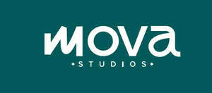

Trade Mark Journal No.2025/027 4 July 2025
UK00004223678 24 June 2025 (41)

- Class 41
- Health and fitness training; Sports and fitness; Exercise and fitness classes; Health and fitness club services; Health club [fitness] services; Exercise [fitness] training services; Fitness and exercise training services; Fitness and exercise instruction; Health club services [health and fitness training]; Fitness club services; Physical fitness consultation; Physical fitness centres; Physical fitness instruction; Physical fitness training services; Sports and fitness services; Fitness training services; Tuition in physical fitness; Physical fitness tuition; Personal trainer services [fitness training]; Personal fitness training services; Providing fitness and exercise facilities; Physical fitness centre services; Exercise [fitness] advisory services; Physical fitness education services; Conducting physical fitness conditioning classes; Health and wellness training; Consultancy relating to physical fitness training; Training services relating to fitness; Conducting fitness classes; Physical fitness assessment services for training purposes; Education services relating to physical fitness; Provision of health club [physical exercise] facilities; Educational services relating to physical fitness; Provision of educational health and fitness information; Instruction courses relating to physical fitness; Physical fitness instruction for adults and children; Conducting training sessions on physical fitness online; Training in yoga; Gym activity classes; Health club services; Sports training; Physical health education; Rental of sports or exercise equipment; Provision of educational services relating to fitness; Exercise classes; Supervision of physical exercise; Providing of training in the field of health care and nutrition; Physical training services; Strength and conditioning training; Personal coaching [training]; Training services relating to occupational health; Providing instruction and equipment in the field of physical exercise; Education and training services in the field of occupational health and safety; Sports club services; Personal trainer services; Training of sports players; Provision of exercise facilities; Provision of instruction relating to exercise; Provision of facilities for group exercise; Booking of exercise facilities; Health club services [exercise]; Services for the provision of exercise equipment; Meditation training; Provision of educational services relating to exercise; Instruction in weight training; Keep-fit instruction; Pilates instruction; Yoga instruction; Gymnasium services relating to weight training; Physical fitness centres (Operation of -); Education; Health education; Conducting of classes; Arranging of classes; Conducting classes in exercise; Arranging and conducting of classes; Producing and conducting exercises for music classes and programmes; Conducting courses, seminars and workshops; Training courses; Conducting classes in weight control; Conducting classes in weight reduction; Arranging for students to participate in educational courses; Arranging of training courses; Residential training courses; Arranging of courses of instruction; Arranging professional workshop and training courses; Provision of training courses; Training courses (Provision of -); Instruction courses related to slimming; Residential education courses; Workshops for training purposes; Written training courses; Preparation of educational courses and examinations; Vocational training courses (Provision of -); Teacher training services; Teaching academy services; Provision of courses of instruction; Courses of instruction (Provision of -); Training of teachers; Conducting of instructional, educational and training courses for young people and adults; Conducting of courses; Conducting instructional courses; Providing courses of training; Self-awareness courses [instruction]; Education, teaching and training; Instruction courses relating to sporting activities; Conducting of educational courses; Organisation of training courses; Training of sports teachers; Providing online courses of instruction; Conducting workshops [training]; Distance learning courses; Instruction courses relating to health; Correspondence courses, distance learning; Providing courses of instruction for young people; Conducting of educational courses in business; Teaching services; Pregnancy gymnastics instruction; Education services relating to yoga; Exercise instruction.
MOVA STUDIOS LIMITED